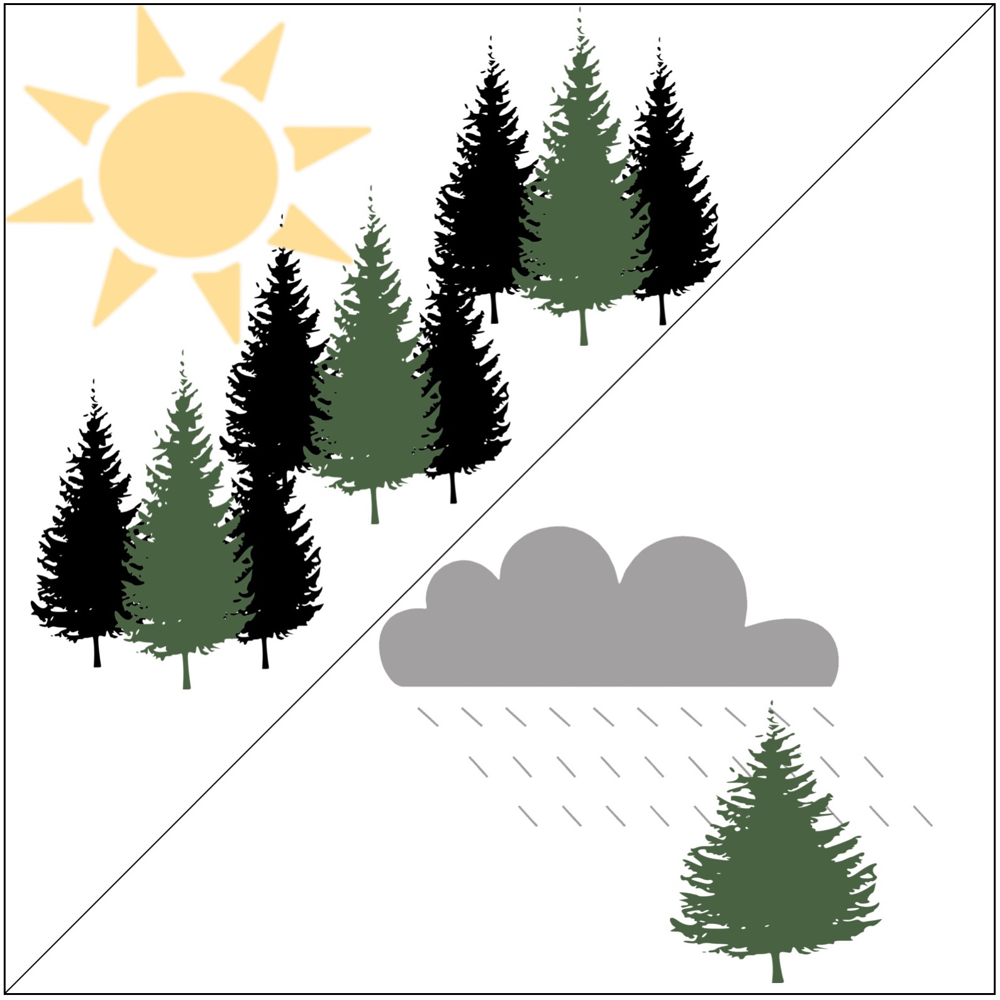

Donna J. Bridge, Ph.D.
Cognitive neuroscientist with over 10 years of experience using complex human behavior and brain data to understand how people think.
I am a professor at Northwestern University Feinberg School of Medicine. In my free time, I practice yoga in a hot room while waving around weights (it's actually a lot of fun), cook vegetarian food, and play board games with my husband. I also enjoy self-reflecting and thinking about life.
contact me resume cvprojects
Consciousness continuum
Unconscious and conscious processes govern our behavior.The eyes are the window to the brain
Using eye movements to read minds.Memory is malleable
Our memories say more about who we are than who we were.Active learning
Actively using memory to enhance learning.
